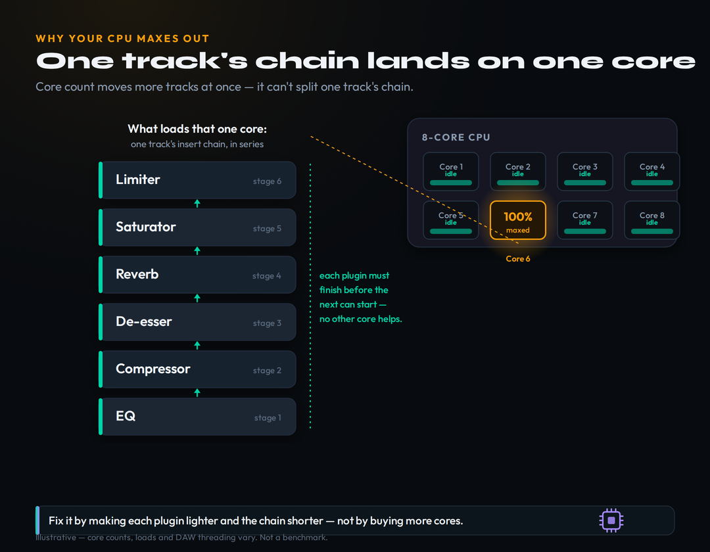
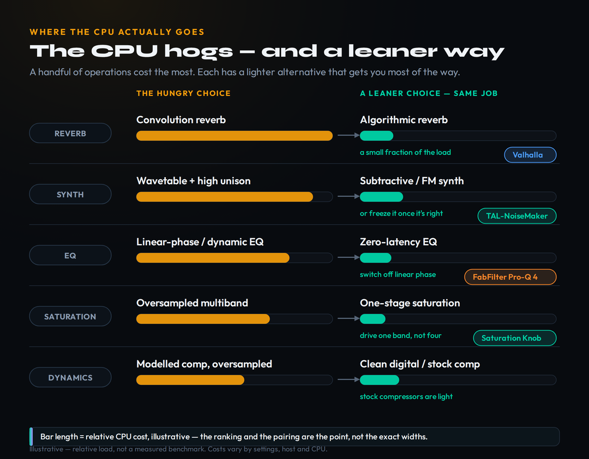
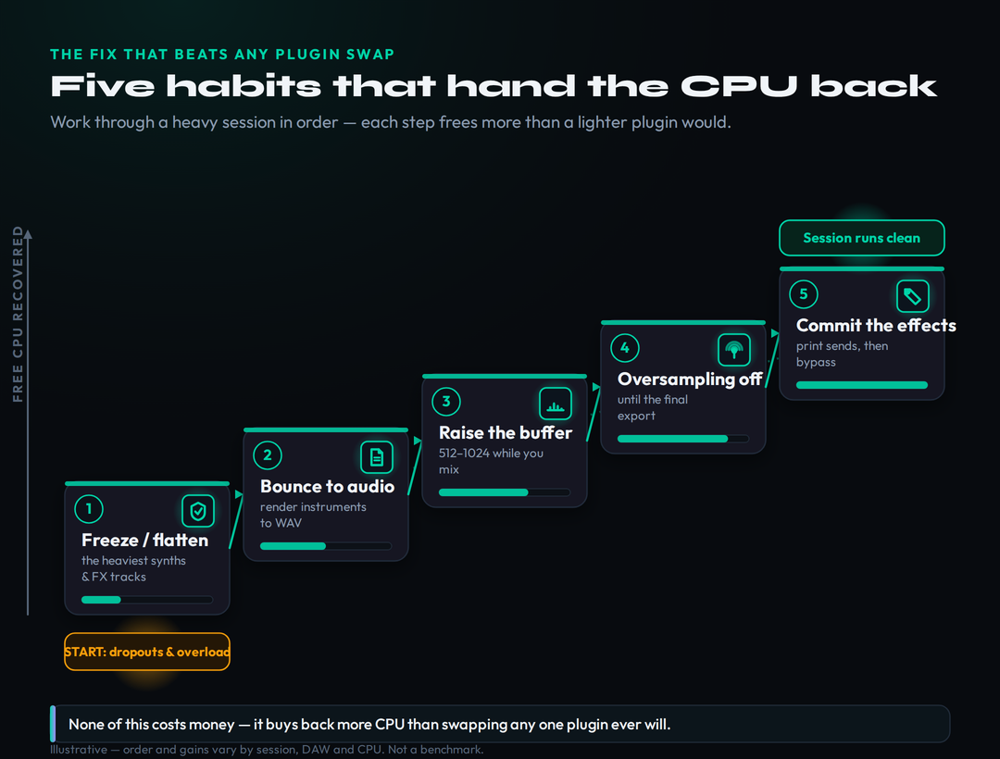

The most CPU-friendly plugins are the ones that avoid the expensive operations — oversampling, linear-phase filtering, convolution reverb and heavy analog modelling — and your DAW's own stock plugins are usually the lightest of all. Among third-party tools, the free picks are genuinely pro-grade: TDR SlickEQ and Kotelnikov, Klanghelm DC1A, Valhalla Supermassive, Softube Saturation Knob, TAL-NoiseMaker and Youlean Loudness Meter. The paid upgrades that earn their load are FabFilter Pro-Q 4 ($199) for surgical EQ and Valhalla VintageVerb ($50) for famously light reverb. But the one thing that fixes dropouts faster than any plugin swap is session management — freeze, bounce, raise your buffer, and commit effects. Sanity-check your levels first with our headroom calculator.
This article contains affiliate links. If you purchase through our links, we may earn a commission at no extra cost to you. This does not affect our editorial independence — every pick here is chosen on merit, and the free options are recommended precisely because they cost nothing and, in this category, give up almost nothing.
Updated June 2026 — "System Overload." "CPU spike." The crackle that turns into a full stop in the middle of your best take. Almost every producer on a laptop hits this wall, and the reflex is always the same: assume the computer is too slow and start pricing a new one. That reflex is usually wrong, and it is expensive. The crackles are rarely about raw horsepower; they are about where the work lands and how heavy the individual plugins on your busiest tracks are. Fix those two things and the same machine that was choking will sail through the session.
This guide takes the CPU problem on two fronts. First, the shopping list: the genuinely efficient EQs, compressors, reverbs, saturators, synths and meters worth building a chain around, grouped by job, each with an honest note on where it gives something up. Second — and this matters more — the workflow that frees up more CPU than any single plugin swap ever will. But none of it makes sense until you understand the one piece of computer architecture that every listicle skips, so we start there. If you are new to all of this, our music production for beginners primer covers the surrounding fundamentals.
Why Your CPU Maxes Out (the single-core truth)
Here is the fact that reframes everything: a single track's plugin chain runs in series, on one CPU core. When you stack an EQ, a compressor, a saturator and a reverb on a vocal, the audio has to pass through each plugin in order — the EQ finishes, then the compressor runs on its output, then the saturator, then the reverb. One plugin cannot start until the one before it has finished, because each needs the previous plugin's result as its input. That chain of dependencies cannot be split across cores. It runs on one core, start to finish, for every single buffer of audio, dozens of times a second.
This is why a producer with an eight-core CPU still gets dropouts. Seven cores can be sitting nearly idle while the eighth is pinned at 100% by one monstrously heavy track — a software synth with sixteen voices of unison feeding a linear-phase EQ feeding a convolution reverb. Your DAW spreads different tracks across different cores, so more cores let you run more tracks at once. What more cores cannot do is make one track's serial chain finish faster. For that, only two things help: a faster single core, and lighter plugins in the chain. You can't buy the first easily. You can absolutely fix the second, and it's free.

One track's insert chain runs in series on a single core. Adding cores moves more tracks at once — it never splits one chain. Illustrative — loads and DAW threading vary by host and CPU.
So what makes an individual plugin heavy? A handful of operations cost far more than the rest. Oversampling runs the plugin's maths at two, four, eight or more times the project sample rate to avoid digital aliasing, which means literally doing the work several times over. Linear-phase filtering (in EQs) uses long FFT-based processing to preserve phase, which is heavier and adds latency. Convolution reverb multiplies your signal against a long recorded impulse response, sample by sample — one of the most expensive things a plugin can do. Dynamic and multiband processing splits the spectrum and runs separate detectors and processors per band. And analog modelling simulates the behaviour of real circuits at the sample level. None of these is bad — each exists for a real reason — but each is a place CPU goes to die, and recognising them on sight is half the battle. The other usual suspect is plain old latency and buffer settings, which we cover in the workflow section. If your laptop itself is the bottleneck, our guide to the best laptops for music production is the place to start.
How We Picked (efficiency, honestly)
A word on what "CPU-friendly" means here and how we judged it, because the honest answer shapes every pick below. We did not run a lab. There is no single repeatable "%CPU" number for a plugin — the load swings wildly with your sample rate, buffer size, oversampling setting, host, and the specific CPU in your machine, so any precise figure you see quoted is close to meaningless out of context. What is reliable is the relative picture: the type of processing a plugin does tells you, with confidence, whether it sits in the light camp or the hungry one, and that ranking holds across machines even when the absolute numbers don't.
So our picks are chosen on architecture and reputation, not invented benchmarks. A minimal-phase EQ with no oversampling is light, full stop. A clean algorithmic reverb is light; a convolution reverb is not. A simple subtractive synth is light; a wavetable monster with high unison is not. Where a plugin is widely observed by engineers to be efficient — Valhalla's reverbs and TAL's synths are textbook examples, and their developers say as much — we note it as a general, observed quality, not a measured lab result. We also weight heavily toward tools that let you control their own cost: an oversampling switch you can leave off while mixing is worth more than a plugin that is permanently heavy. Throughout, the guiding bias is the one most roundups won't say out loud, which we'll prove in its own section: your stock plugins are probably already efficient, and the cheapest fix is to use them more.

Every hungry operation has a lighter alternative that does the same job for most material. Bar length is relative cost — illustrative, not a measured benchmark.
Efficient EQs
EQ is the most-used processor in any mix, so its efficiency compounds across dozens of instances — getting this one right matters more than any other category. The good news is that ordinary minimal-phase EQ is cheap: a digital EQ doing standard bell and shelf curves with no oversampling and no linear-phase mode barely registers, and you can run many instances without trouble. The cost only appears when you switch on the expensive modes, which is exactly the control you want.
For free, TDR SlickEQ is the reference: a gorgeous, musical three-band equaliser with an output stage, several EQ models, and a famously light footprint. It is all most channels ever need, and stacking it across a session is painless. When you need surgical precision, FabFilter Pro-Q 4 ($199, around $169 on sale) is the rare flagship that is also a model of efficiency. Released in late 2024 in VST, VST3, AU, CLAP, AAX and AudioSuite for Windows and macOS, it runs in a zero-latency mode by default and only becomes heavy if you deliberately switch a band — or the whole plugin — into Natural Phase or full linear-phase mode. Its new Character modes (Clean, Subtle, Warm) and per-band dynamics add capability without forcing oversampling on you. Used in its default zero-latency state, it is light enough to live on every track; reserve the linear-phase mode for the one or two mastering moves that actually need it.
The cautionary tale belongs here too. A dynamic EQ like TDR Nova is a brilliant, beloved tool — but it is not a "light EQ." Dynamic EQ runs a detector and a variable filter per band, which is meaningfully heavier than a static EQ, and reviewers consistently flag it as one of the hungrier free processors. Use it deliberately where its dynamic behaviour solves a problem; don't reach for it as your everyday channel EQ when SlickEQ or your stock EQ would do the same tonal move for a fraction of the cost. For the broader landscape, our roundup of the best EQ plugins covers sound and features, and the Bible entry on linear-phase EQ explains exactly why that mode costs what it does.
Efficient Compressors & Dynamics
Compression follows the same logic as EQ: the plain version is cheap, and the cost lives in the fancy modes. A clean digital compressor — including every modern DAW's stock compressor — is light. The load arrives with oversampling, with detailed analog modelling that simulates a real circuit sample by sample, and with multiband designs that split the spectrum into separately-processed bands. A single instance of a modelled, oversampled 1176 emulation is fine; thirty of them across a session is how a project starts to crackle.
For a transparent, efficient workhorse, TDR Kotelnikov (free) is hard to beat — a mastering-grade bus compressor with smart release behaviour and a light footprint, equally at home on a mix bus or a drum bus. For character without the weight, Klanghelm DC1A (free) is a gloriously simple two-knob compressor that glues and squashes with almost no CPU, and its bigger sibling logic carries into MJUC jr (free), a light vari-mu-style compressor that adds warmth cheaply. The pattern to internalise: reach for a clean digital compressor as your default, and bring in the heavy modelled units only on the few tracks where their specific colour is the point. The recurring real-world finding is that an efficient channel strip on every track beats stacking separate single-purpose plugins, both for CPU and for sanity. For the full picture of sound and use, see the best compressor plugins.
It helps to know why some compressors cost more, because the label on the plugin usually tells you in advance. The topology being modelled sets the floor: a clean feed-forward digital design is the lightest; an opto emulation (an LA-2A type) adds a modelled light-cell response; a FET emulation (the 1176 family) models a fast transistor circuit; and a vari-mu design (Fairchild-style) models tube behaviour — each step toward faithful analogue modelling adds per-sample maths. Two optional costs sit on top of that floor: lookahead, which buffers the signal so the detector can see transients coming — invaluable for limiting, but it adds both latency and work — and oversampling, which most modelled units offer to keep their internal saturation clean. The practical read is to pick the plainest topology that gives you the control the track needs, switch lookahead and oversampling on only for the master limiter or the one bus that earns them, and let every other instance run lean.
Efficient Reverbs & Delays (algorithmic vs convolution)
Reverb is where the single biggest CPU decision in most sessions gets made, and most producers make it without realising. There are two families. Algorithmic reverb builds space from networks of delays and filters — clever maths that is genuinely light. Convolution reverb multiplies your signal against a long recorded impulse response of a real space, which is gorgeous and realistic and one of the most expensive operations a plugin can perform. A couple of convolution instances can cost more than your entire rest-of-mix. For the overwhelming majority of music, algorithmic reverb is not a compromise — it is the right choice, and it happens to be the light one. The Bible entry on convolution reverb goes deeper on the trade.
The standout free pick is Valhalla Supermassive, currently at version 5.0 ("Sirius"), with 22 reverb-and-delay modes, native Apple Silicon support, and a footprint so light it is almost rude — you can run it on send after send without noticing. It is the single best argument that free and efficient and beautiful are not mutually exclusive. When you want a colour-rich algorithmic reverb to build a record around, Valhalla VintageVerb ($50) is the genre standard and is renowned for being remarkably low-CPU for its quality, with 22 reverb modes, three colour modes (1970s, 1980s, and Now), and full Windows and macOS support including Apple Silicon. Valhalla's whole catalogue is, frankly, a masterclass in efficient algorithmic design. Use a couple of reverbs on sends shared by many tracks rather than one reverb per track, and even the lightest plugin gets lighter in aggregate. Our best reverb plugins roundup covers the wider field; the convolution options there are the ones to deploy sparingly.
The section title promises delays, and they earn a word because they are the bargain of this whole category. A digital delay is one of the cheapest effects you can run — a buffer and a feedback path — so the lush, three-dimensional space you can build from a couple of sends, a stereo delay and a light algorithmic reverb costs a fraction of what a single convolution instance would. Many of Supermassive's 22 modes lean on delay for exactly this reason. The architectural habit that matters most here, though, is the send bus: instead of inserting a reverb on a track, create one reverb on an aux, set it fully wet, and route tracks to it with sends. Twelve vocals sharing one reverb send sound more cohesive and cost one instance instead of twelve — one of the rare cases where the efficient choice is also the better-sounding one. The same goes for delay throws shared across a chorus.
Efficient Saturation & Character
Saturation is a place producers quietly burn enormous CPU without meaning to, because the good-sounding versions tend to oversample heavily to keep their added harmonics clean — and oversampling, again, means doing the work several times over. The trick is to separate the moves that need that polish from the ones that don't. A simple one-stage saturator driving a single band is cheap; an oversampled multiband saturator running across every channel is not.
For free, Softube Saturation Knob (currently v2.5.x) is the efficient classic: one knob, three modes (Keep Low, Neutral, Keep High), VST, AU and AAX, requiring only a free Softube account. It adds analog grit with a tiny footprint and belongs on more channels than most producers use it on. Klanghelm IVGI (free) is the other staple — a subtle, musical saturator with optional oversampling you can leave off for everyday use and switch on only when a sound needs the extra cleanliness. The hungry end of this category is the oversampled multiband flagship — something like FabFilter Saturn 2 ($149) — which is a wonderful, deep tool but a genuine CPU cost when it is running its full multiband, oversampled engine. Buy it for the few sounds that earn it; don't make it your everyday saturator on thirty tracks. For more on building tone into a mix, see the best plugins for mixing in 2026.
There is a reliable tactic that makes even the hungriest saturator effectively free: print it and disable it. Saturation is almost always a creative, set-and-forget decision rather than something you keep automating, so once a sound has the grit you want, render that part to audio and switch the live plugin off — you keep every harmonic and reclaim every cycle the oversampled engine was spending. The same logic explains why console and tape emulations, which colour a signal pleasantly but subtly, are best applied to a whole bus rather than per channel: one instance of a tape plugin across the drum bus does most of what twenty instances across every drum track would, at a twentieth of the cost. Reserve the per-channel, oversampled treatment for the lead vocal or the one synth that has to cut, and let buses carry the broad colour for everything else.
Efficient Synths & Instruments
Software instruments are the heaviest single thing in most modern sessions, and the reason is voices. A synth's CPU cost roughly multiplies with the number of notes held at once, the number of unison layers stacked per note, and the complexity of the oscillator. A wavetable synth with sixteen voices of unison on a sustained chord is doing an extraordinary amount of work; a simple subtractive synth playing a bassline is doing very little. The two big wavetable-and-modelling synths everyone reaches for — Serum, Vital, Massive X, u-he Diva — sound superb and are correspondingly demanding, especially Diva in its high-quality modes.
For a genuinely light go-to, TAL-NoiseMaker (free) is the answer: a three-oscillator virtual-analog synth, up to six voices, actively maintained, Windows and macOS, whose developer explicitly highlights its low CPU usage. It covers an enormous amount of ground — basses, leads, pads, plucks — for almost nothing, and it is the synth to default to when you are sketching or when the part doesn't need a flagship. Dexed (free) is the other efficient hero, a faithful FM synth that produces classic DX-style tones at a low cost. The crucial habit, though, is not which synth you load but what you do once the part is right: freeze or bounce it to audio. A frozen track costs essentially nothing, no matter how heavy the synth that made it. That single move, covered in the workflow section and in the Bible entry on freeze, lets you use the heavy synths you love without paying their CPU cost for the rest of the session. The wider best free VST plugins and best VST plugins for beginners guides have more efficient instruments worth keeping installed.
Lightweight Meters & Utilities
Metering is easy to overlook as a CPU cost, but loudness meters and spectrum analysers run continuous analysis on every buffer, and a heavy analyser instanced on many tracks adds up. The fix is to use a couple of good, efficient meters on the master and the key buses rather than scattering them everywhere. Youlean Loudness Meter (free, with a Pro tier that unlocks extras) is the standard for LUFS metering and is light enough to leave open on your master throughout a session. Voxengo SPAN (free) is the efficient spectrum analyser of choice — its developer notes it runs efficiently even in large sessions — and a single instance on the mix bus tells you almost everything a per-track analyser would, for a fraction of the cost. Keep metering centralised, lean on these two, and reach for your headroom calculator to check levels without loading anything at all.
The genuinely free utilities deserve a mention too, because they replace work you might otherwise pay for. Gain and trim plugins, simple stereo-width tools, mono-makers and phase utilities are about as close to zero-cost as processing gets — and using a gain plugin to stage levels correctly into a compressor often means that compressor has to work less hard, so the cheap plugin saves CPU downstream. The one metering cost worth watching is oversampled true-peak metering and long-history spectrogram displays, both of which run extra analysis continuously; leave true-peak mode for the master and the final export check rather than every channel. Centralise your meters, lean on free utilities for the plumbing, and you spend your CPU budget where it actually shapes the sound instead of on watching it.
Your Stock Plugins Are Probably Enough
Here is the part most plugin roundups quietly avoid, because it works against the affiliate commission: your DAW's stock plugins are already efficient, and they are already good. The stock EQ, compressor, reverb, delay and saturator in every modern DAW — Logic, Ableton Live, FL Studio, Cubase, Studio One, Reaper, Bitwig — are written and optimised specifically for that host, by the people who built the host. They are, as a rule, the most CPU-efficient option you own, and the quality gap to boutique plugins narrowed years ago to the point where most of it is invisible in a mix.
The honest truth is that the large majority of CPU problems are solved not by buying lighter plugins but by using your stock plugins more and reaching for the hungry boutique processors only where they genuinely change the result. A mix built almost entirely on stock EQ, stock compression and a stock or Valhalla reverb, with one or two character plugins on the sounds that matter most, will be lighter, faster, and very nearly indistinguishable from a mix that spent a CPU fortune to do the same job. We say this knowing it sells fewer affiliate links, because it is true and it saves you money you can spend where it actually counts. If you have never leaned on them properly, our walkthrough on how to mix with stock plugins is the most cost-effective upgrade in this entire guide, and the best plugins for beginners and best mixing plugins for beginners roundups point to the few third-party additions actually worth installing early.
The Workflow That Beats Any Plugin Swap
Everything above helps, but this section is the one that actually fixes your session, because it attacks the problem at its root: it stops the CPU from having to do the work at all. No plugin swap comes close to the gains here, and none of it costs a cent. Work through these in order on any session that is struggling.
Freeze or flatten the heaviest tracks first. Freezing renders a track's output — including all its plugins and its software instrument — to a temporary audio file and plays that back instead of computing the plugins live. A frozen track costs almost nothing regardless of how heavy its chain was, and you can unfreeze to edit at any time. Target your biggest synths and your most plugin-laden tracks first; freezing the three heaviest tracks in a session often ends the dropouts on its own. Bounce virtual instruments to audio for parts you have finished writing — same principle, made permanent, and explained further in the Bible entries on freeze and bounce.
Raise the buffer size while you mix. Your audio buffer size sets how big a chunk of audio the CPU processes at once. A small buffer (64–128 samples) gives low latency for recording but forces the CPU to work in tiny, frequent, inefficient bursts. A large buffer (512–1024) hands it big, relaxed chunks and slashes dropouts — at the cost of latency you don't care about once you're mixing and no longer monitoring live input. This is the single fastest fix for crackles in a busy session: small buffer to track, big buffer to mix. Keep oversampling off until export. Most plugins that offer oversampling let you set a low factor for real-time playback and a high one for offline render. Mix at the low setting, switch to high only for the final bounce — the CPU cost of high oversampling is irrelevant in an offline render because nothing is playing in real time.

The order that fixes a struggling session — each habit frees more CPU than swapping any single plugin. Illustrative — order and gains vary by session, DAW and CPU.
Commit the effects you've decided on. Once you're sure about a sound — the EQ move, the saturation, the delay throw — print it to the audio and disable the live plugin. You keep the result and reclaim the CPU. Keep your sample rate sane. Running a project at 96 kHz roughly doubles every plugin's per-sample workload versus 48 kHz; unless you have a specific reason, 44.1 or 48 kHz is the efficient default. And mind the per-track versus master-bus split: a heavy processor on a single bus that many tracks feed into costs one instance, while the same processor copied onto twenty individual tracks costs twenty. Move shared work — reverb, glue compression, tonal saturation — onto buses and sends wherever the sound allows. If, after all this, your machine still can't keep up, that's the genuine signal it might be time to look at hardware, and our guide to the best laptops for music production under $1000 covers sensible upgrades without overspending.
Build a Low-CPU Mix Chain (worked example)
To make all of this concrete, here is a complete, copyable mix chain built entirely from efficient picks — the kind of template you can deploy across a whole session without ever seeing a CPU spike. On an individual channel, start with your stock EQ or TDR SlickEQ for tonal shaping, follow with your stock compressor or Klanghelm DC1A for control, and add Softube Saturation Knob only where a track needs grit. That's a full channel strip for almost no CPU. For space, don't put a reverb on the channel at all — send it to a shared Valhalla Supermassive or VintageVerb reverb bus, so one instance serves the whole mix.
On the master bus, run a light chain: stock or SlickEQ for broad tonal moves, TDR Kotelnikov for gentle glue, and your stock or a true-peak limiter at the end — keeping any oversampling at its low setting until you render. Reserve FabFilter Pro-Q 4's linear-phase mode for the one or two mastering moves that truly need it, and leave everything else zero-latency. Watch it all on a single Youlean meter and a single Voxengo SPAN on the master. This chain will give you a finished, competitive mix on a modest laptop, and it leaves so much CPU headroom that the heavy creative plugins — your Serum patches, your Diva pads — can be used freely and then frozen, never paying their cost past the moment you commit them. For a deeper walkthrough of ordering and gain structure, our guide on how to build a plugin chain and the gain staging reference tie the whole thing together. The point this guide has been making throughout: the efficient mix is not the compromised one — it is usually the better-disciplined one.
Practical Exercises
Open your busiest session and turn on your DAW's CPU or performance meter. One track at a time, bypass every plugin on a track and watch the meter. Find the single track that drops the CPU the most when bypassed — that's your hog. Now freeze just that one track and notice how much headroom you get back from a single move. This teaches you to diagnose by the meter instead of guessing, and it proves the single-core point: one heavy track, not the whole session, is usually the culprit.
Take a channel you've processed with boutique plugins and recreate the same moves using only your DAW's stock EQ, compressor and saturator. A/B the two versions at matched loudness and watch the CPU meter on each. Most producers are surprised twice: by how close the sound is, and by how much lighter the stock chain runs. Keep whichever genuinely sounds better — the exercise is about learning where boutique plugins actually earn their CPU and where they don't.
Set up a session with two shared reverb sends (one short, one long) and one shared saturation bus, and route every track that needs those effects to the sends rather than instancing plugins per channel. Then freeze every software-instrument track as soon as its part is final. Compare the CPU load against a version of the same session with per-track effects and live instruments. You're building the disciplined template that lets a modest machine run a large, ambitious arrangement without a single dropout.